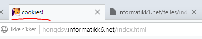

18A Oppsummering
Det jeg har lært første halvdel av skoleåret 2018-2019 er:
(ikke kronologisk rekkefølge)
sette inn lydfiler i en nettside (oppgave 03A)
CSS
Lage en knapp i en nettside
lage en menybar med... (hold musen over her)
dropdown
z-index
Hvordan man bruker en radarknapp og en sjekkboks (oppgave 03B)
Har også lært å bruke...
Denne knappen (glemte hva den het)
Sette inn et tabell i html
Bruke mine
egendefinerte skrifttyper
Ha skygge bak
Skriften
Sette mine egne videoer i html
Bruke frameset hvor to eller flere sider kan vises i en side (oppgave 02AB)
Sette egen ikon og tittel på nettsidens fane/vindu

Bruk av..."map area"? vet ikke hva det kalles, men refererer til oppgave 04B